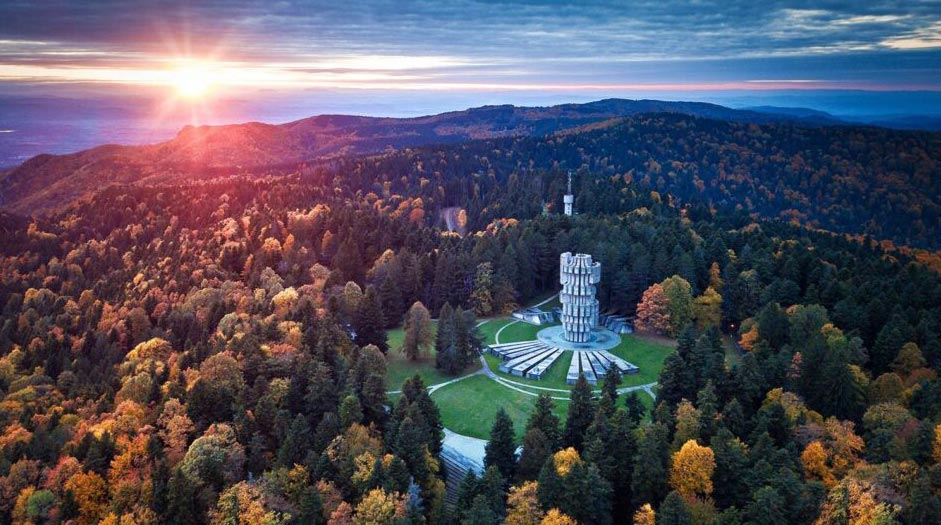
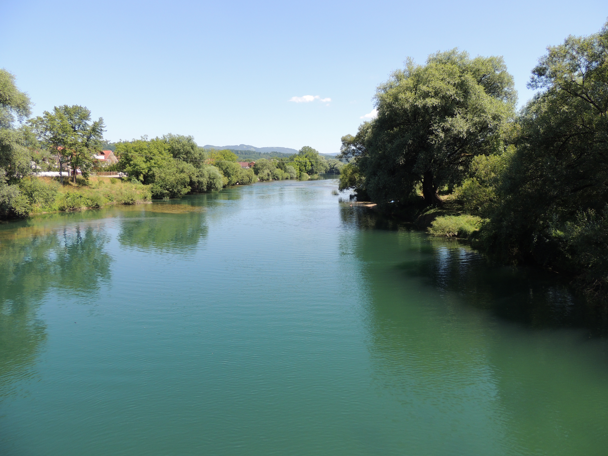
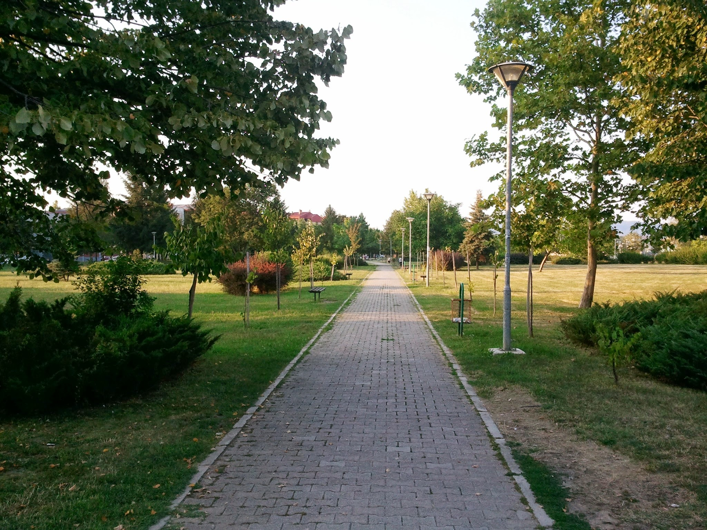

Dobrodošli u moj rodni grad
Prijedor je grad koji se nalazi u sjeverozapadnom dijelu Bosne i Hercegovine, u entitetu Republika Srpska. Smješten je u dolini rijeke Sane, a okružen je planinama Kozara i Prosara, što mu daje prirodno lijep i strateški važan položaj. Prijedor je poznat kao industrijski i rudarski centar, posebno po rudniku željezne rude u Ljubiji koji je dugo imao veliki značaj za privredu ovog kraja. Pored industrije, razvijena je i poljoprivreda zahvaljujući plodnoj zemlji u okolini grada. Grad ima bogatu istoriju koja seže još iz srednjeg vijeka, a kroz različite periode bio je pod uticajem Osmanskog carstva, Austro-Ugarske i kasnije Jugoslavije. Danas je Prijedor moderan gradski centar sa školama, kulturnim ustanovama, sportskim klubovima i manifestacijama. U kulturnom smislu, poznat je po umjetnicima, galerijama i manifestacijama, kao i po blizini nacionalnog parka Kozara koji je jedno od najvažnijih prirodnih i istorijskih područja u regiji. Prijedor je danas važan regionalni centar koji povezuje industriju, prirodu i kulturu, i ima značajnu ulogu u zapadnom dijelu Bosne i Hercegovine.

Planina poznata po prirodi i istoriji.

Idealna za odmor i šetnju.

Omiljeno mjesto za opuštanje.